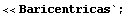
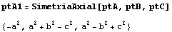
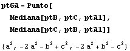
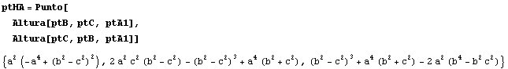
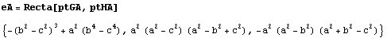
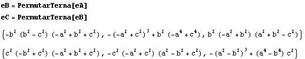
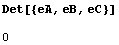
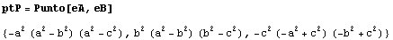
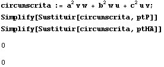
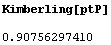

|
Dado un triangulo ABC, se construyen los triángulos simétricos con respecto a cada un de los lados del triángulo ABC. Las rectas de Euler trazadas en cada uno de estos triángulos se intersectan en un punto P. Además, el punto P y los ortocentros de los triángulos simétricos pertenecen a la circunferencia circunscrita en el triángulo ABC. |
|
Propuesto por David Benítez Mojica
y Nora Lucia Leija Mendoza
|
Solución Francisco Javier García Capitán
Usaremos coordenadas baricéntricas:

Hallamos el punto simétrico A1 de A respecto de BC:

Hallamos los el baricentro GA y HA del triángulo A1BC:


La recta de Euler de este triángulo unirá el baricentro y el ortocentro:

En lugar de repetir los cálculos para los otros vértices, permutamos las coordenadas y las letras en el resultado hallado para el vértice A:

Comprobamos que las tres rectas de Euler son concurrentes:

Hallamos el punto P como intersección de dos de las rectas:

Comprobamos que el punto P y el ortocentro HA pertenece a la circunferencia circunscrita a ABC:

Finalmente, es razonable que este punto ya esté catalogado en la Enciclopedia de Kimberling. Hallemos su coordenada de búsqueda:

Mirando en la enciclopedia, vemos que se trata de X(110), el foco de la parábola de Kiepert.